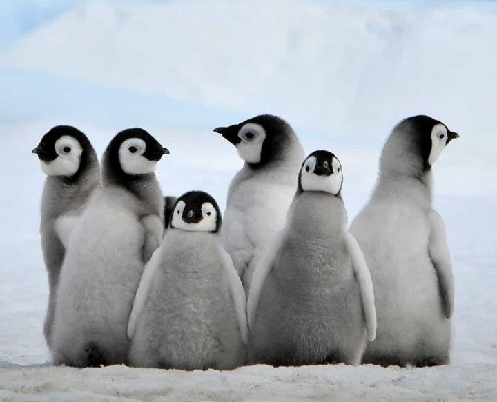
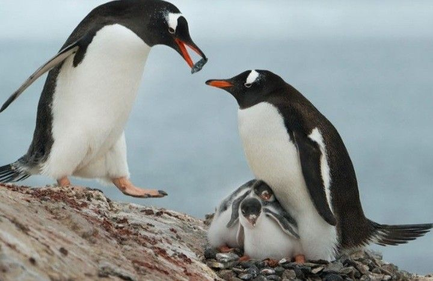
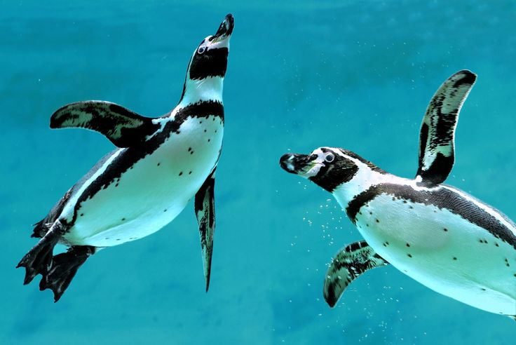
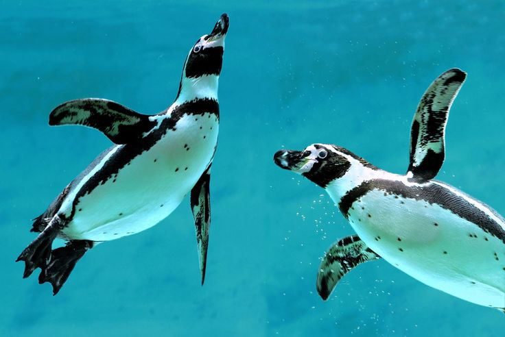
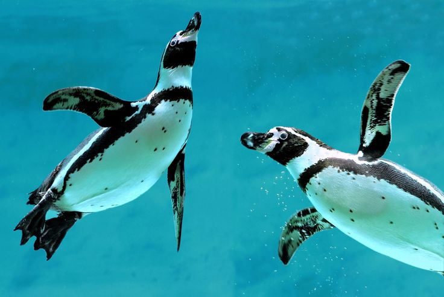

Пингвинарий
Добро пожаловать в страну холода и льда, где обитают одни из самых обаятельных жителей Антарктики — пингвины!
Наблюдайте за их забавными привычками, общением и плаванием в специально воссозданной арктической среде.

Об экспозиции
«Пингвинарий» — это уникальная зона, имитирующая суровые условия Антарктики и южных островов. Здесь вы увидите несколько видов пингвинов: от величественных королевских до энергичных хохлатых.
Наблюдая за их жизнью через стеклянные купола и подводные окна, вы узнаете, как пингвины охотятся, ухаживают за потомством и взаимодействуют друг с другом.
Зона снабжена системами охлаждения, чтобы создать для пингвинов максимально комфортные условия, а также снабжена образовательными материалами для всех возрастов.

 


Интересные факты
Пингвины — птицы, но не умеют летать. Зато отлично плавают!
Королевский пингвин может достигать роста до 1 метра.
Пингвины умеют "разговаривать" с помощью уникальных звуков.
Самцы пингвинов высиживают яйца, пока самки охотятся.